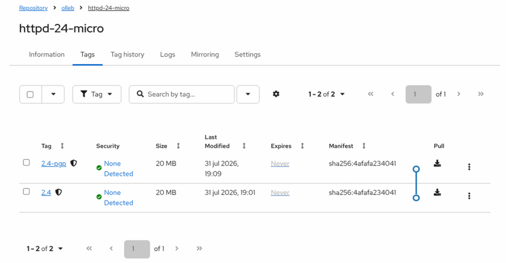
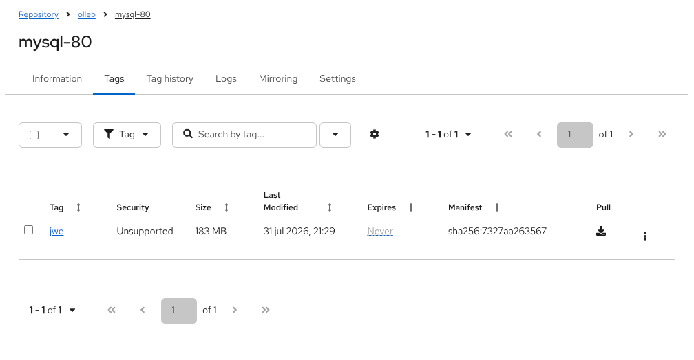

OCI-Based Artifacts
Historically, container registries were strictly designed to store Docker image formats. However, Red Hat Quay fully supports the Open Container Initiative (OCI) artifact specification. This means Quay acts as a universal artifact repository, allowing you to store, secure, and distribute Helm charts, encrypted containers, digital signatures, and compressed images side-by-side with your standard container workloads.
Working with Helm Charts
Helm 3 introduced native support for storing and pulling charts directly from OCI-compliant registries. In this exercise, we will download an existing Helm chart from a public web repository and push it to our local Quay registry as an OCI artifact.
-
First, authenticate your Helm CLI with your Quay registry. Use your standard Quay user credentials:
export QUAY_HOSTNAME=$(oc get route quay-registry-quay -n quay-workshop -o jsonpath='{.spec.host}') helm registry login ${QUAY_HOSTNAME} -
Download a sample Helm chart locally. We will use the Quarkus chart from the Red Hat Developer repository:
-
Push the downloaded chart into your Quay organization (in this example,
olleb). Helm will automatically communicate with Quay using the OCI protocol:helm push quarkus-0.0.3.tgz oci://${QUAY_HOSTNAME}/olleb/helm(Note: By pushing to
olleb/helm, Helm automatically appends the chart name, resulting in the creation of theolleb/helm/quarkusrepository in Quay). -
Open the Red Hat Quay UI and navigate to the newly created
olleb/helm/quarkusrepository. -
Click on the Tags tab.

Notice that the Helm chart is published and managed by Quay exactly like a standard container image, complete with metadata and OCI manifests.
-
Finally, to prove the chart is fully functional, you can deploy the application to your Kubernetes cluster directly from your Quay OCI repository:
helm install quarkus oci://${QUAY_HOSTNAME}/olleb/helm/quarkus --version=0.0.3
Signed Container Images
Image signing ensures the integrity and authenticity of container deployments, preventing malicious actors from tampering with your workloads. Red Hat Quay natively supports storing digital signatures alongside the images as OCI artifacts.
Signing Container Images with Cosign
Cosign (part of the Sigstore project) has become the industry standard for container signing. It creates a signature and pushes it directly to the registry as an OCI object attached to the image digest.
-
First, generate a Cosign key pair. This will create a
cosign.key(private key) andcosign.pub(public key) in your current directory:cosign generate-key-pair(Note: You will be prompted to enter a password to encrypt the private key. Remember this password, as you will need it later to sign the image).
-
Export your registry hostname and authenticate your Podman CLI. When prompted, use your standard Quay user credentials:
export QUAY_HOSTNAME=$(oc get route quay-registry-quay -n quay-workshop -o jsonpath='{.spec.host}') podman login ${QUAY_HOSTNAME} -
Pull a sample image, tag it for your local registry, and push it:
podman pull quay.io/fedora/httpd-24-micro:2.4 podman tag quay.io/fedora/httpd-24-micro:2.4 ${QUAY_HOSTNAME}/olleb/httpd-24-micro:2.4 podman push ${QUAY_HOSTNAME}/olleb/httpd-24-micro:2.4 -
Authenticate the Cosign CLI. Cosign requires its own login session.
Important: Replace
<YOUR_QUAY_USERNAME>with your actual Quay username before running this command.DOCKER_CONFIG="${XDG_RUNTIME_DIR}/containers/" cosign login ${QUAY_HOSTNAME} -u <YOUR_QUAY_USERNAME> -
Retrieve the exact SHA256 digest of the image you just pushed, and use Cosign to sign that digest:
DIGEST=$(podman inspect --format '{{.Digest}}' "${QUAY_HOSTNAME}/olleb/httpd-24-micro:2.4") cosign sign --key cosign.key "${QUAY_HOSTNAME}/olleb/httpd-24-micro@$DIGEST" --tlog-upload=false(Note: You will be prompted to enter the password you set in Step 1. The
--tlog-upload=falseflag disables uploading the signature to the public Sigstore transparency log, which is the standard practice for private enterprise registries). -
Navigate to the Red Hat Quay Dashboard and open the
olleb/httpd-24-microrepository. -
Click on the Tags tab.

You should now see the Cosign signature automatically stored in the repository alongside your image. Quay recognizes the OCI artifact type and links it visually to the signed image tag.
Signing Container Images with PGP (RFC4880)
While Cosign is a newer standard, PGP (Pretty Good Privacy) remains a widely used, traditional method for signing container images. It is natively supported by container engines like Podman and Skopeo without requiring external plugins.
-
First, generate a new PGP key pair. We will use a batch script to automate the creation without interactive prompts:
gpg --batch --gen-key <<EOF Key-Type: RSA Key-Length: 4096 Name-Real: Quay Signer Name-Email: pgp-signer@olleb.com Expire-Date: 0 %commit EOF -
Tag the existing image with a new
-pgpsuffix so we can easily distinguish it in the Quay UI from our previous Cosign exercise:podman tag quay.io/fedora/httpd-24-micro:2.4 ${QUAY_HOSTNAME}/olleb/httpd-24-micro:2.4-pgp -
Push the image using the
--sign-byflag. This instructs Podman to cryptographically sign the image payload using your specific GPG key during the push process:podman push --sign-by pgp-signer@olleb.com ${QUAY_HOSTNAME}/olleb/httpd-24-micro:2.4-pgp -
By default, Podman stores this PGP signature locally in your user’s sigstore. To verify the signature, you must first extract the exact SHA256 digest of the image:
DIGEST=$(podman inspect --format '{{.Digest}}' "${QUAY_HOSTNAME}/olleb/httpd-24-micro:2.4-pgp") HASH=$(echo $DIGEST | cut -d':' -f2) -
Now, verify the cryptographic signature using the
gpgCLI, passing the extracted hash into the sigstore path:gpg --verify ~/.local/share/containers/sigstore/olleb/httpd-24-micro@sha256=$HASH/signature-1 -
By default, PGP signatures are stored locally. To instruct our tooling to upload the signature directly to Quay, we create a temporary local configuration overriding the default behavior:
mkdir -p local-registries cat <<EOF > local-registries/default.yaml default-docker: use-sigstore-attachments: true EOF -
Use
skopeowith this custom configuration to copy the image back to itself, which forces the signature to be uploaded as an OCI artifact to Quay:skopeo copy --registries.d ./local-registries \ --sign-by pgp-signer@olleb.com \ docker://${QUAY_HOSTNAME}/olleb/httpd-24-micro:2.4-pgp \ docker://${QUAY_HOSTNAME}/olleb/httpd-24-micro:2.4-pgp

Encrypted Container Images
Container image encryption allows you to encrypt the image layers themselves before pushing them to a registry. Unlike TLS (which encrypts the network connection) or disk encryption (which encrypts the storage backend), image encryption ensures that even if a malicious actor gains access to the registry storage, they cannot read the image contents without the decryption keys.
Red Hat Quay natively supports storing these encrypted OCI artifacts. Typically, the image decryption key is stored as a Secret on the OpenShift cluster nodes, allowing the cluster to decrypt and run the workloads seamlessly.
Encrypting Container Images with JSON Web Encryption (JWE) (RFC7516)
JWE uses standard RSA key pairs to encrypt the image layers.
-
First, generate an RSA private and public key pair using OpenSSL:
openssl genrsa -out private-key.pem 2048 openssl rsa -in private-key.pem -pubout -out public-key.pem -
Pull a sample image and tag it for your local registry:
export QUAY_HOSTNAME=$(oc get route quay-registry-quay -n quay-workshop -o jsonpath='{.spec.host}') podman pull quay.io/fedora/mysql-80:80 podman tag quay.io/fedora/mysql-80:80 ${QUAY_HOSTNAME}/olleb/mysql-80:jwe -
Push the image, providing the public key to encrypt the layers. Podman will encrypt the image locally before sending it to Quay:
podman push --encryption-key jwe:public-key.pem ${QUAY_HOSTNAME}/olleb/mysql-80:jwe -
Navigate to the Quay Dashboard and open the
olleb/mysql-80repository. Go to the Tags tab to verify the image was pushed.

|
UI Visibility: Currently, the Red Hat Quay web interface does not display a dedicated visual badge for encrypted images in the Tags view. The registry transparently stores the encrypted layers as OCI artifacts. To verify encryption status, administrators must inspect the image manifest (either via the UI’s raw manifest view or using CLI tools like |
|
Security Scanning of Encrypted Images: If you check the Security column in the Quay UI for your encrypted images, you will notice it says |
-
Let’s inspect the OCI manifest directly in the registry using
skopeo. Notice that themediaTypeof the layers explicitly indicates they are encrypted:skopeo inspect --raw docker://${QUAY_HOSTNAME}/olleb/mysql-80:jwe | jq '.layers[] | .mediaType'(You should see outputs like
application/vnd.oci.image.layer.v1.tar+gzip+encrypted). -
Delete your local unencrypted copy, and try to pull the encrypted image from Quay without providing the key:
podman rmi ${QUAY_HOSTNAME}/olleb/mysql-80:jwe podman pull ${QUAY_HOSTNAME}/olleb/mysql-80:jweYou will get a layer decoding error (
Error: writing blob…) because Podman cannot decrypt the content. -
Now, pull the image again, this time providing the private key for decryption:
podman pull --decryption-key private-key.pem ${QUAY_HOSTNAME}/olleb/mysql-80:jwe
The image will be pulled and decrypted successfully.
Encrypting Container Images with PGP (RFC4880)
While JWE is the modern standard for container encryption, you can also use PGP. To ensure compatibility with Podman’s internal encryption engine, we will generate an unencrypted key and export it in pure binary format.
-
Create an isolated GPG directory and generate a single-purpose PGP key pair:
export GNUPGHOME=$(mktemp -d) gpg --batch --gen-key <<EOF Key-Type: RSA Key-Length: 4096 Key-Usage: sign, encrypt Name-Real: Quay Encrypter Name-Email: pgp-encrypter@olleb.com Expire-Date: 0 %no-protection %commit EOF -
Pull a sample image and tag it:
podman pull quay.io/fedora/postgresql-16:16 podman tag quay.io/fedora/postgresql-16:16 ${QUAY_HOSTNAME}/olleb/postgresql-16:pgp -
Encrypt and push the image. Podman will query our isolated GPG keyring to lock the image layers before uploading them to Quay:
podman push --encryption-key pgp:pgp-encrypter@olleb.com ${QUAY_HOSTNAME}/olleb/postgresql-16:pgp -
Delete the local unencrypted image so we can test the decryption:
podman rmi ${QUAY_HOSTNAME}/olleb/postgresql-16:pgp -
To decrypt a PGP-encrypted image with Podman, export your secret key to a pure binary file (avoiding ASCII armor, which the OCI parser can misidentify) and pass it to the pull command:
# Export the private key in binary format (no --armor) gpg --export-secret-keys pgp-encrypter@olleb.com > pgp-private.bin # Pull and decrypt the image podman pull --decryption-key ./pgp-private.bin ${QUAY_HOSTNAME}/olleb/postgresql-16:pgp # Clean up the temporary GPG directory unset GNUPGHOME
|
JWE vs PGP Decryption: When configuring automated decryption in an OpenShift or Kubernetes cluster, JWE is the industry standard. While Podman can encrypt images using native PGP keys, the tooling ecosystems ( |
|
Both encryption methods demonstrate how Red Hat Quay acts as a transparent, secure storage layer for OCI artifacts. The encryption and decryption operations happen entirely client-side (via Podman or Skopeo), ensuring a zero-trust model where the registry never sees your unencrypted data. |
Securing the Supply Chain: Attaching an SBOM
A Software Bill of Materials (SBOM) is a comprehensive inventory of all software components, libraries, and dependencies included in your container image. Attaching an SBOM to your images is a critical step in modern DevSecOps and supply chain security (SLSA).
Red Hat Quay acts as a true OCI registry, meaning it can store not just container layers, but also attached metadata like signatures and SBOMs.
-
Ensure the
olleb/kafkarepository exists in your registry. If you skipped previous exercises or need to recreate it, you can quickly bootstrap it by running:podman pull quay.io/strimzi/kafka:latest-kafka-4.0.0 podman tag quay.io/strimzi/kafka:latest-kafka-4.0.0 ${QUAY_HOSTNAME}/olleb/kafka:latest podman push ${QUAY_HOSTNAME}/olleb/kafka:latest -
We will use
syftto scan our image and generate an SBOM in the industry-standard SPDX JSON format:syft scan ${QUAY_HOSTNAME}/olleb/kafka:latest -o spdx-json > sbom-kafka.json -
Inspect the generated file. You will see a detailed inventory of every package installed inside the Kafka image:
head -n 20 sbom-kafka.json -
Modern DevSecOps standards require attestations to be tied to an immutable digest (
sha256:…), not a mutable tag (likelatest). Let’s retrieve the exact image digest from our registry usingskopeo:IMAGE_DIGEST=$(skopeo inspect --format '{{.Digest}}' docker://${QUAY_HOSTNAME}/olleb/kafka:latest) echo $IMAGE_DIGEST -
Now, we will create an Attestation. We will use
cosignand the private key you generated in previous exercises (cosign.key) to sign the SBOM and push it directly to Red Hat Quay:cosign attest --yes --tlog-upload=false --predicate sbom-kafka.json --type spdxjson --key cosign.key ${QUAY_HOSTNAME}/olleb/kafka:latestNote: You may be prompted to enter the password for your
cosign.key. -
Navigate back to the Red Hat Quay Dashboard and open the
olleb/kafkarepository.Go to the Tags tab. You will notice a new tag ending in
.att(or an attestation icon, depending on your Quay UI version). This demonstrates that Quay natively stores the in-toto attestation as an OCI artifact intimately linked to the original container. -
To verify the attestation and read the SBOM, any user can now run the verification command using your public key:
cosign verify-attestation --type spdxjson --key cosign.pub --insecure-ignore-tlog ${QUAY_HOSTNAME}/olleb/kafka@${IMAGE_DIGEST} | jq '.payload | @base64d | fromjson'
|
The Power of OCI Attestations in the Real World: Notice how we didn’t push a new container image; we attached a cryptographically signed proof (an in-toto statement) to an existing, immutable digest. Quay stores these relationships transparently. In a real-world CI/CD pipeline, your build system would automatically generate and sign this SBOM right after the |
|
Alternative: Scanning a local tarball
In some air-gapped CI/CD pipelines, you might need to scan an image locally before pushing it to a registry, and the |